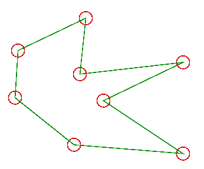

L'entrada d'informació gràfica es realitza, de vegades, per a definir un model gràfic (per exemple en una aplicació de dibuix a mà alçada), però sovint es realitza com part de la interacció de l'usuari amb un programa que gestiona informació gràfica, per tal de simplificar-ne l'ús. Un exemple són molts dels applets d'aquest llibre, en els que podeu girar els models que esteu veient mitjançant el ratolí.
Un cas especial i molt important d'aquest segon tipus d'entrada és la selecció d'informació gràfica, d'alguns aspectes de la qual ens ocupem en aquest darrer apartat d'aquest capítol.
Malgrat que aquesta problemàtica es presenta a gran part d'aplicacions gràfiques interactives, per a fixar idees imaginem que hem de desenvolupar una aplicació de dibuix al pla, és a dir una aplicació que ens permet introduir les dades de diferentes primitives gràfiques 2D i la seva visualització. Evidentment hi hauran primitives per a crear geometria -potser un polígon regular donat el centre i un vèrtex (i el nombre de costats), o una poligonal obtinguda mostrejant posicions del ratolí, o una imatge llegida d'un fitxer i insertada en una posició donada. En tots aquests casos l'usuari ha d'entrar punts (centre del polígon, vèrtex, punt inferior esquerra de la imatge,...) però la seva entrada no presenta cap altra dificultat que llegir les coordenades d'un píxel, cosa discutida en apartats anteriors. No obtant, observeu, que aquesta informació estarà en coordenades de dispositiu i que les primitives gràfiques i els models geomètrics treballen en coordenades d'aplicació (metres, milles, milímetres,..).
També necessitarem funcionalitats que ens permetin modificar informació gràfica ja existent. Per exemple podriem voler esborrar algun element del dibuix que estem fent (sense -evidentment- esborrar-ho tot i tornar a començar). Aleshores l'usuari entrarà un punt, idealment sobre una poligonal, o un vèrtex per a identificar la primitiva a modificar.
Observeu que les pantalles que avui dia fem servir tenen resolucions raonablement altes, i tendeixen a augmentar. No és doncs raonable esperar que l'usuari sigui capaç d'entrar exactament el píxel en que es troba el punt que vol seleccionar! Fins i tot un operador entrenat i amb un pols molt ferm perdrà força temps en fer la feina si disposem aquesta condició (Pots provar-ho tú mateix, amb qualsevol programa de dibuix, o movent dues finestres per a aliniar-les exactament... Es pot fer però és tediós). Per aquesta raó la solució habitualment adoptada consisteix en assignar a cada element geomètric a la pantalla una zona d'influència (en vermell a la figura), tal que si l'usuari selecciona qualsevol dels píxels dins d'aquella zona, es selecciona aquell element geomètric (vèrtex) que està dins la zona. Aquest petit detall serà determinant per a què la nostra aplicació sigui fàcil de fer servir.
Observeu tanmateix que aquest mecanisme de selecció implica que per a cada operació de lectura (pixel introduït) s'haurà de recòrrer tota la base de dades gràfica de l'aplicació, transformant les coordenades del píxel a a coordenades de l'aplicació (matriu de transformació Vista- Finestra_2D), calculant la seva distància a les diferents primitives i retornant com element seleccionat aquell tal que el punt fos a la seva àrea d'influència (si n'hi ha més d'un element així, l'aplicació haurà de determinar com procedir, evidentment).
Aquest mateix problema es complica en el cas d'aplicacions 3D, ja que el que habitualment entra l'usuari a travès del dispositiu corresponent és un píxel (i per tant informació en sols dues dimensions). En aquest cas caldrà calcular la distància de tots els elements geomètrics de la base de dades gràfica (pensem en píxels per a simplificar) al raig en coordenades de món que representa tots els punts que es projecten sobre aquest píxel.
El procediment anterior pot impletentar-se de diferents maneres. Per exemple, calcular l'equació del raig que uneix el píxel concret (coordenades introduïdes amb el ratolí) i l'observador. Posteriorment analitzar l'àrea d'influència de quina primitiva (vèrtex) és atravessada per aquest raig. Aquesta serà la primitiva escollida. Si hi ha mès d'un element que compleixi la condició, l'aplicació haurà de determinar com procedir, per exemple aquella que es trobi més propera a l'observador.
Un altre procediment és ampliar l'estructura de dades tridimensional de manera que per a cada vèrtex ens permeti emmagatzemar les seves coordenades en el sistema de coordenades de dispositiu (després d'aplicar les diferents transformacions del procés de visualització, conservant la coordenada z del sistema de les coordenades de visió). L'element escollit serà el que dins de la seva àrea d'influència en coordenades de dispositiu (nomès es consideren les coordenades x i y) contingui el píxel. Si hi ha més d'un element que compleixi la condició, es fa servir la coordenada z per a distingir l'element més proper a l'observador (z més gran).
Tanmateix la majoria de llibreries gràfiques 3D d'avui dia (i en
particular OpenGL i GL4Java) ofereixen mecanismes de selecció. En
general el seu ús consisteix en tornar a enviar a pintar l'escena
assignant a cada primitiva un identificador (ho fa automaticament la
llibreria), i, automàticament, el sistema ens torna el (o els)
identificadors dels elements que han estat seleccionats (la seva
rasterització contenia el píxel). Els detalls de l'ús d'aquestes
crides el podeu trobar al capítol "El pipeline de visualització
d'OpenGL".